ストーリーズ・ハイライト
親密度を上げる運用と"心を動かす"導線設計 — Jun 2026
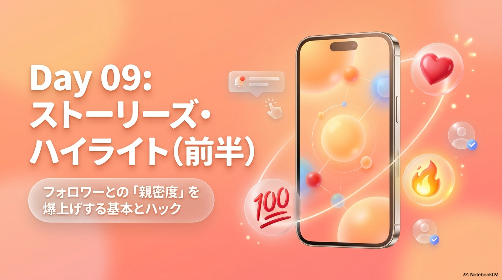
ストーリーズの基本操作とハイライト・アクション機能を習得し、フォロワーとの「親密度」を高める仕掛けと、見た人の"心と行動（DM）"を動かす問いかけを、自分の発信に1つ落とし込めるようになる。
アルゴリズムが評価する「親密度」の仕組み（DM返信が最重要）を理解し、双方向スタンプで反応を取れるようになる
暗めフィルター・右下スタンプ配置・Canvaマジック拡張など、伝わるストーリーズの作り方を身につける
外部リンク直貼りを避けてプロフィール導線に誘導し、「問いかけ（フック）」でDM数を伸ばす運用法を知る
ストーリーズのアルゴリズム評価を攻略する鍵は、フォロワーとの「親密度（シグナル）」です。親密度が上がると、フォロワーのホーム画面上部であなたのアイコンが左端（最優先）に表示されるようになります。
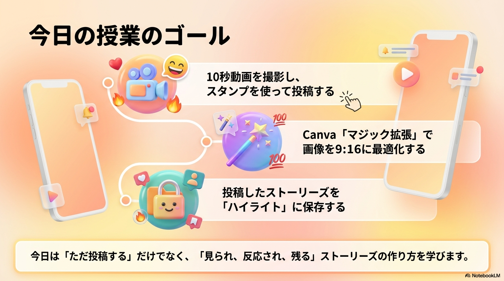
アルゴリズムで最も強力に評価されるのが「DM（ダイレクトメッセージ）のやり取り」です。ストーリー上の仕掛けを通じて、フォロワーからの返信をいかに引き出すかが運用の最重要ポイントになります。
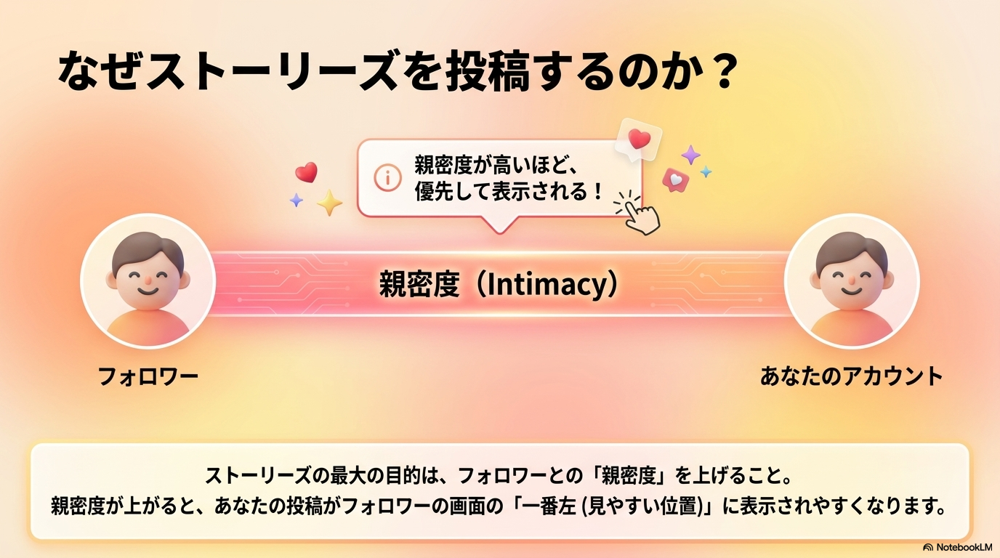
フォロワーとの距離を縮めるために、ストーリーズ特有の「双方向コミュニケーションスタンプ」を積極的に導入しましょう。
親密度を高める5つの双方向スタンプ：
アンケート：2択で手軽に答えてもらえる質問（質問箱）：自由記述で意見や相談を募集するクイズ：クイズ形式で楽しく参加させる絵文字スライダー：スライドして感情の度合いを示してもらうお題：同じテーマの写真などを一緒に投稿させる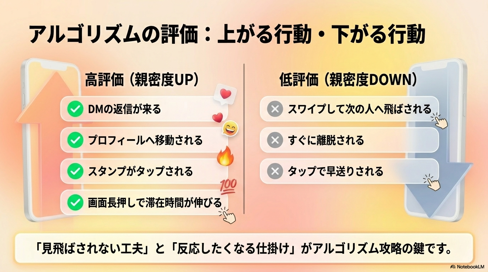
親密度を育てる上でのNG行動：
常にプロフィール枠（アイコンの周り枠）をアクティブに保ち、表示優先度を下げないために、最低でも「1日1回以上」の毎日投稿を心がけてフォロワーに存在をアピールしましょう。
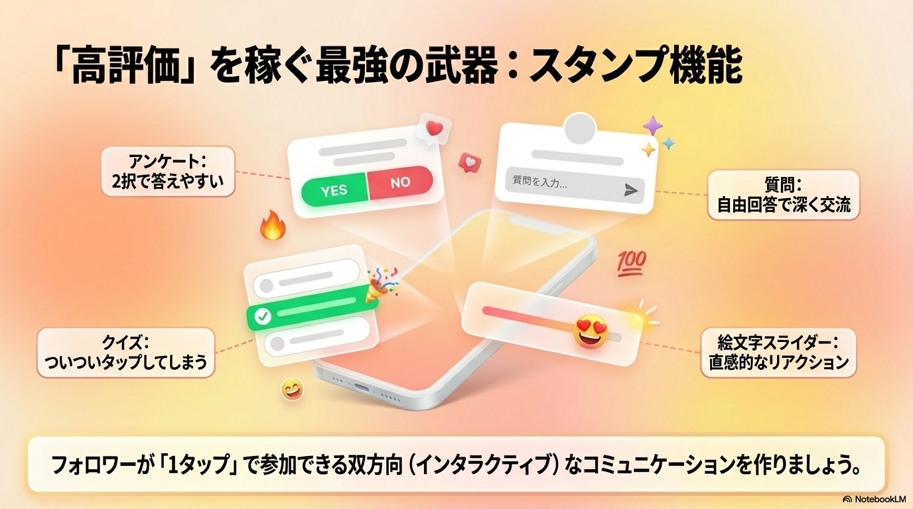
ストーリーズの作成は、スマホのInstagramアプリ内で直接行うのが基本です。ただ画像を載せるだけでなく、ユーザーの操作心理に基づいた見栄えと配置の基本テクニックを身につけましょう。
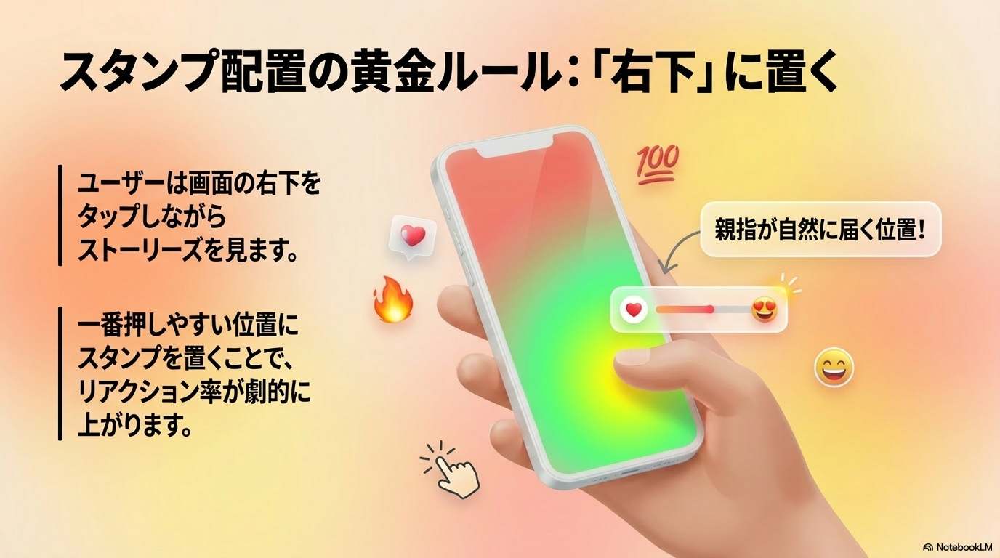
カメラでその場で撮影（長押しで動画）するか、端末のアルバムから画像・動画を選択します。
フィルターから暗めのエフェクト（おすすめ：Now2.0）を使用します。画面全体が程よく暗くなり、その上に載せる文字情報がくっきりと際立ち、格段に読みやすくなります。
テキストを入力する際、上品さや落ち着きを演出したい場合は「明朝体」、カジュアルさやインパクトを重視する場合は「ゴシック体」を選択して世界観を合わせます。
アンケートなどのスタンプは「画面の右下」に配置します。スマホを持つ多くのユーザーが親指で画面の右下をタップして次へ進む操作を行うため、右下に置くことで無意識のタップ（リアクション率）を劇的に増やすことができます。
文字情報やスタンプの配置位置ひとつで、フォロワーのリアクション率は大きく変化します。ユーザーが操作しやすい「右下タップエリア」を意識して配置を工夫しましょう。
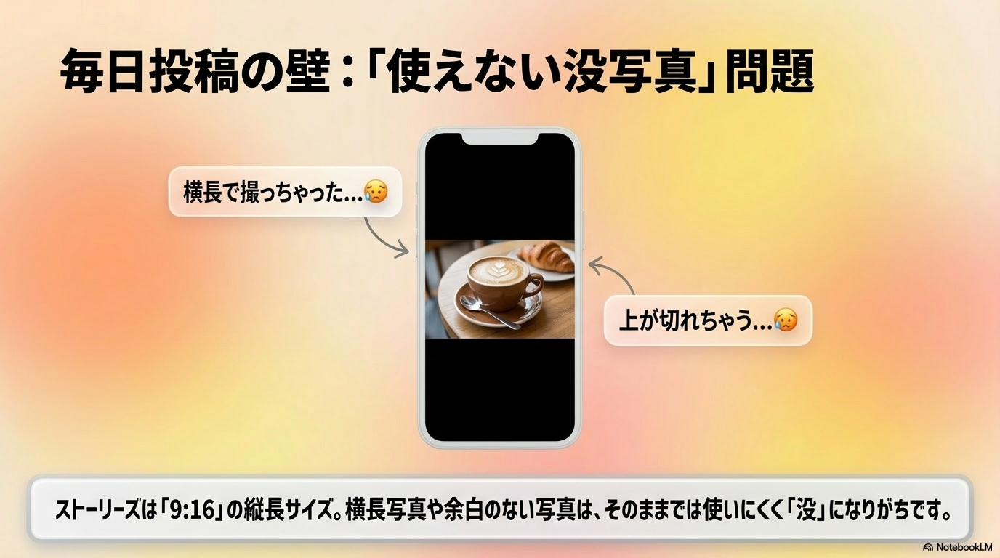
ストーリーズを盛り上げるために、多様な便利機能を活用しましょう。
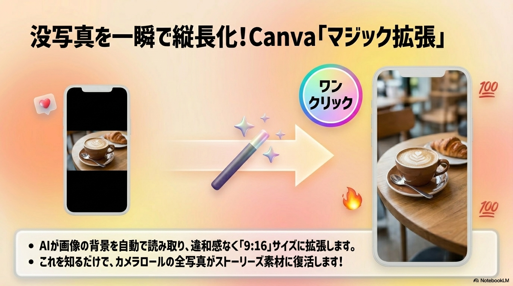
特に「ストーリーコメント欄」や「メンションのリポスト」は、フォロワーとの双方向の絡みを生み出しやすく、親密度の向上に貢献します。
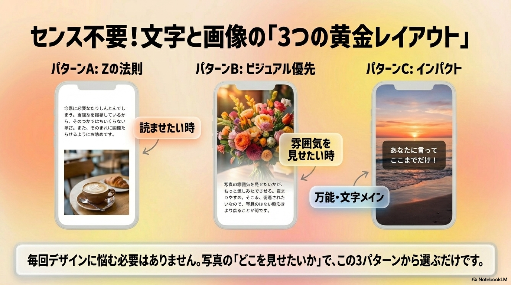
ストーリーズの背景に写真を使いたい時、「サイズが合わない」「文字を載せる余白がない」という没写真に困ることがあります。CanvaのAI機能を使えば、これを一瞬で解決できます。
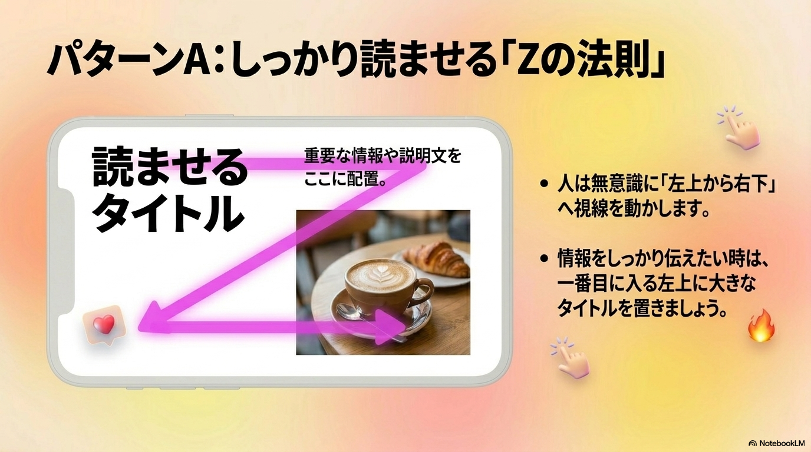
Canva「マジック拡張（Magic Expand）」機能：
横長の写真や見切れてしまった写真を取り込み、AIによって写真の外側の背景を自動補完・生成して、ストーリーズに最適な縦横比 9:16 に背景を広げてくれる機能です。これにより、お手持ちの写真素材をすべてストーリーズ用として無駄なく活用・救済できます。
AIで縦長に背景を拡張した写真の上に、視線誘導の法則を活かした「3つの黄金レイアウト」で文字を載せていきましょう。
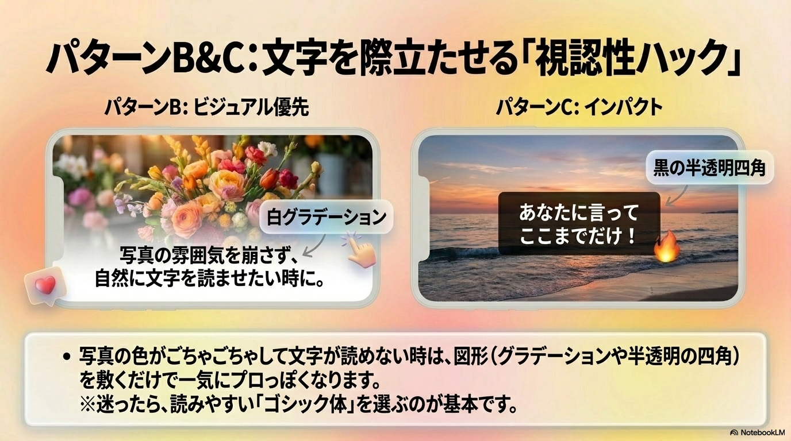
人間の目線が左上から右下へ流れる「Zの法則」に基づき、左上に目を引くメインタイトルを大きく配置。伝えたい文字情報をしっかり読ませたい時におすすめです。
ビジュアルの雰囲気やエモさを第一に見せたい時。写真の下部に文字を載せる際、文字の可読性を上げるために「白いグラデーション（または薄い四角）」を敷くのが鉄則です。
背景写真の中央にメッセージをドーンと配置。背景写真の上に「黒い半透明の四角」を敷き、その上に白文字を載せることで、どんな背景でも文字が明瞭に読め、滞在時間も延びます。
この3パターンのレイアウトをテンプレ化しておくことで、デザインに迷う時間をゼロにし、常に読みやすく美しいストーリーズを瞬時に量産することが可能になります。
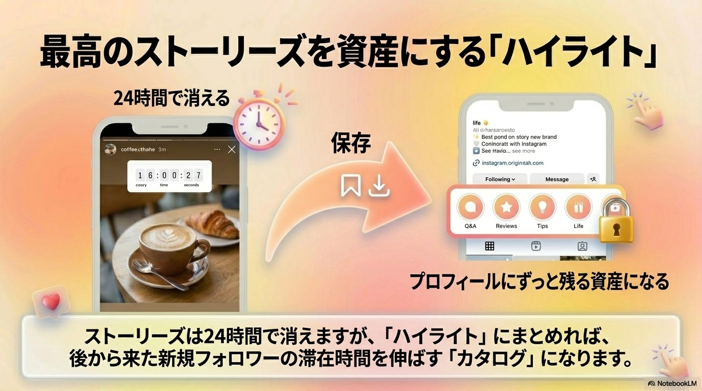
デザインのノイズを取り除き、テキスト情報と画像を美しく調和させることが、離脱を防いで読まれるストーリーズを作る極意です。
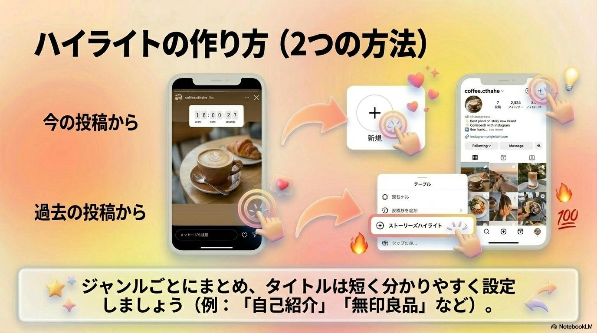
ストーリーズは通常24時間で消えてしまいますが、「ハイライト」機能を使うことで、プロフィールページにカテゴリ別のフォルダとして永久に残すことができます。
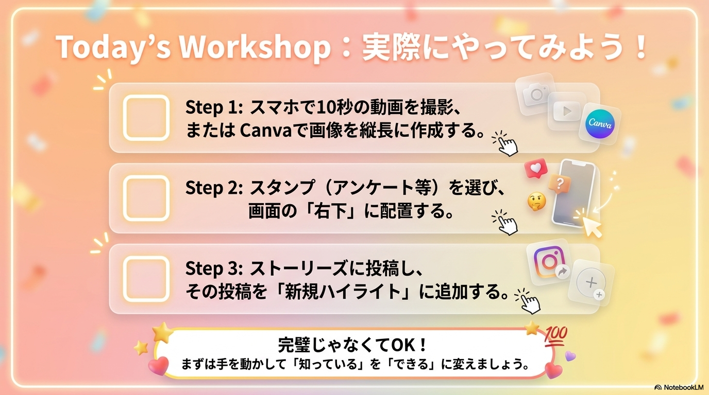
💡 ハイライトは新規フォロワー向けの「常設カタログ（プロフィール上の固定資産）」
プロフィールに来てくれた新規ユーザーは、過去の投稿だけでなくハイライトをタップしてあなたのアカウントの「提供価値」や「ストーリー」をまとめて把握します。自己紹介、過去の実績、おすすめコンテンツなどを綺麗に整理して格納し、資産化しましょう。
ハイライトをテーマごとに整理し、魅力的なカバー画像（Canvaで作成可能）を設定しておくことで、プロフィールを訪れたユーザーの回遊性を高め、フォロー率向上につなげます。
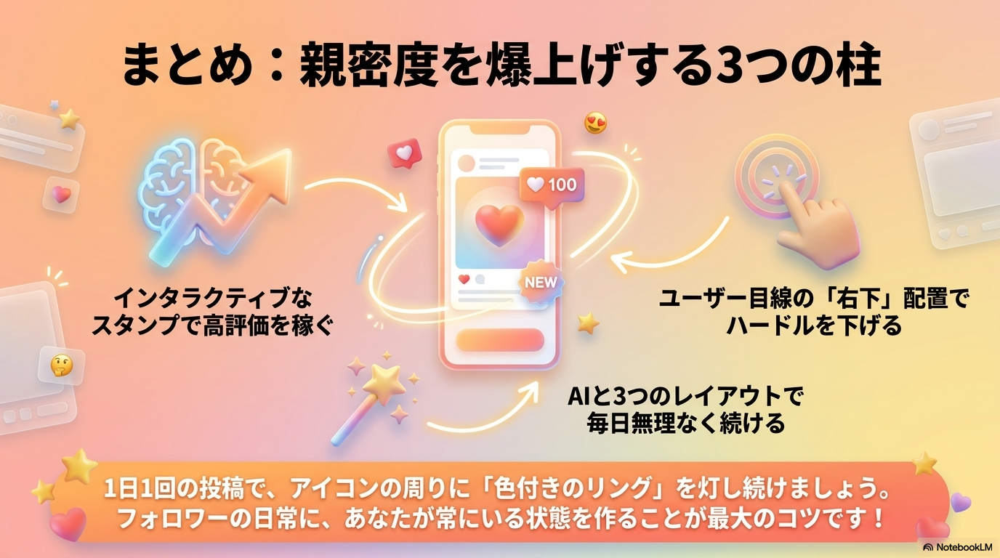
目的： ストーリーズの基本操作、ハイライトの追加、アクション（双方向スタンプ）機能の追加を体験する
現在のInstagramにおいて、ストーリーズの役割は数年前から変化しています。以前はストーリーズが「主要なファン化ツール」でしたが、今はカメラに向かって顔出しで直接語りかける「喋るリール動画」自体が強力なファン化装置となっています。
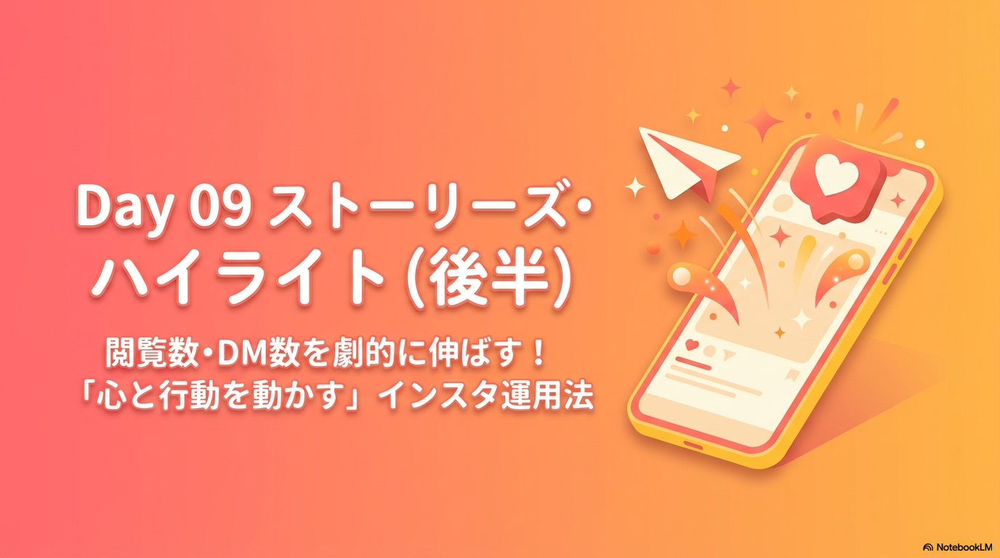
💡 ストーリーズは「リール動画の補助・補足・解説」の場所
ファン化はリールに任せ、ストーリーズは「リールで話しきれなかった補足情報」「違う角度からの解説」をテキスト主体でじっくり伝える役割を担います。無理に複数枚のストーリーを作って消耗せず、「渾身の1枚（読むストーリーズ）」に価値ある情報をギュッと凝縮して届けるのが最新の鉄板戦略です。
この「補助・補足」としての長文テキストによる読むストーリーを構築し、しっかりと読ませるためのデザインを工夫します。
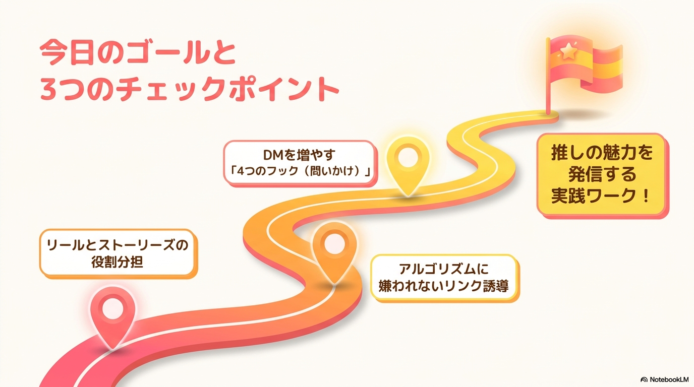
⚠️ 外部リンク（LINE、ブログ等）のストーリー直接貼り付けは【厳禁】
Instagram運営はユーザーに「アプリ内に長く滞在してほしい」と考えています。ストーリーに外部サイトへのリンクスタンプを直貼りしてユーザーをアプリ外へ逃がし続けると、アルゴリズムによってアカウントの評価が下げられ、ストーリーズの閲覧数が劇的に（最大120%）減少するというペナルティが生じます。
外部へのアクセス誘導を行いたい場合でも、直接リンクスタンプを貼る行為は避けましょう。
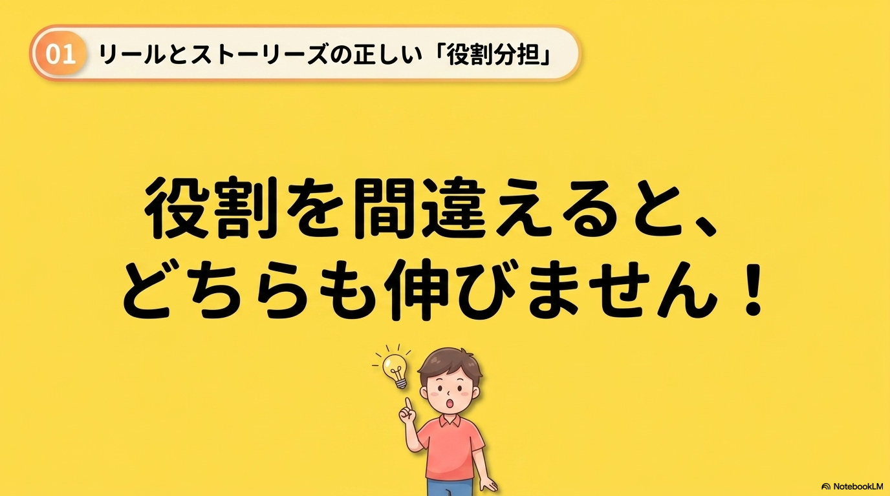
正しい外部誘導プロセス：
ストーリー上にはリンクスタンプを貼らず、テキストで「プロフィール欄のリンクから詳細を受け取れます」と記載し、一度自分のプロフィールページへ誘導します。そこからプロフィールリンクを経由させて外部（LINEなど）へ誘導します。
このプロセスであれば、Instagramアプリ内でのユーザー行動として完結するためアルゴリズム評価が落ちず、かつ「一度プロフィールに戻ってでも登録したい」という本当に熱量の高い濃いファン（見込み客）だけを厳選して集めることができるため、最終的な成約率も格段に高まります。
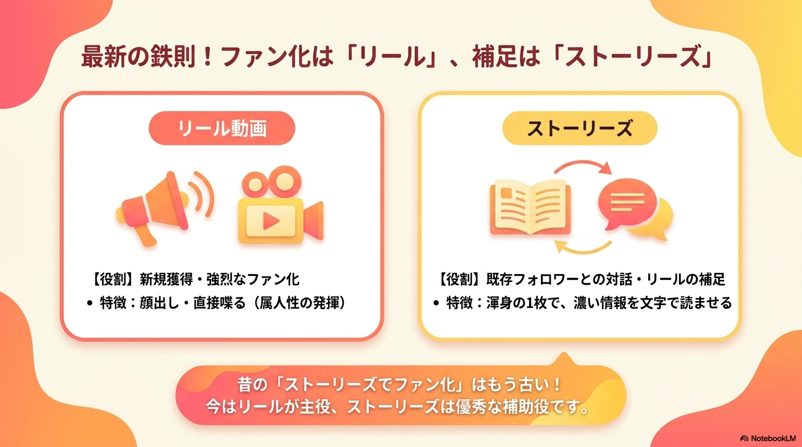
ストーリーズの閲覧数を伸ばし、フォロワーの反応を引き出すためには、いきなり自分の伝えたい説明（自己満足の長文）を書いてはいけません。人は思考停止状態でストーリーを見ているため、冒頭で「心に語りかける問いかけ（フック）」を入れる必要があります。
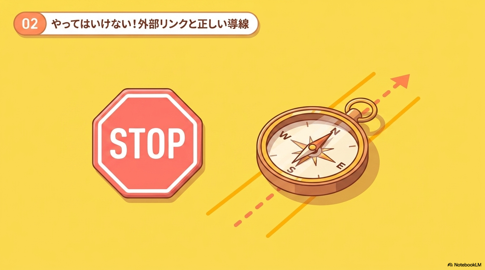
「こんなお悩みありませんか？」と相手の直面している課題を問いかけて自覚させます（例：「お金がなくて我慢した経験、ありますよね」）。自分の話だと認識させるためのフックです。
「こうなったら嬉しくないですか？」と、ターゲットが求める具体的な未来を、食費・家賃・旅行などの細かなバリエーションを交えて鮮明に想像させます（例：「月10万増えれば、部屋を1つ増やせます」）。
自分の過去の辛かった体験談（もやし生活など）も交え、ユーザーが日常の中で見て見ぬふりをして忘れている「現状維持を続けた場合の痛み（言いたいことを飲み込む毎日）」を言語化し、危機感を持たせます。
問いかけをストーリーの冒頭に挟んで感情を揺さぶることで、視聴者は無意識に思考を開始し、自分の問題としてストーリーズを読み進めてくれます。
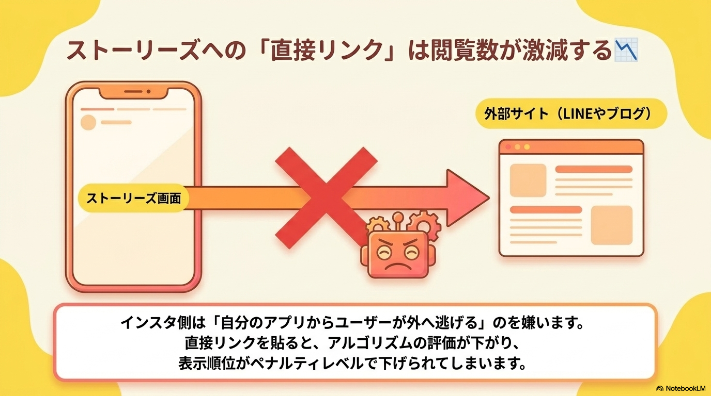
感情を動かす5つの問いかけフック（具体例）：
※番外編：行動を先延ばしする人へ「あれ、以前も同じこと言っていませんでしたっけ？」と先回りして痛いところを突くフックも、思考の現状維持を壊すために絶大です。
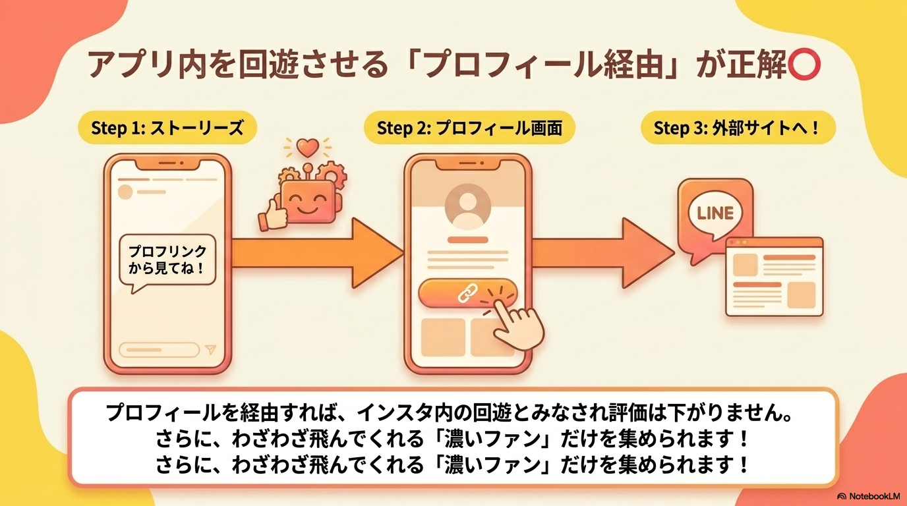
視聴者の感情（悩みや憧れ）を引き出す適切な言葉の選択が、DM返信や次のアクションを起こすきっかけを作ります。
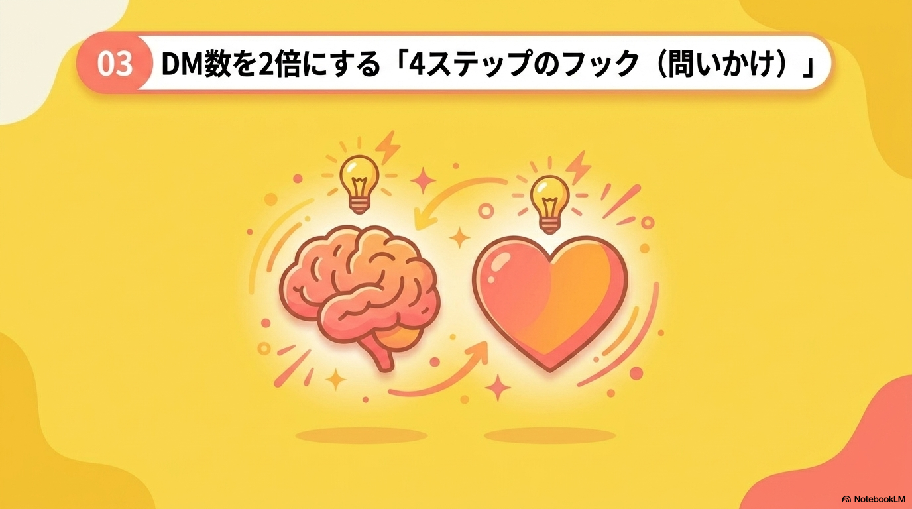
アカウント設計をし、信頼（俗属性）を伝えることができても、商品やサービスが売れないケースがあります。それは、ユーザーが「今の状態を変えなければならない」という問題意識を自覚していないためです。
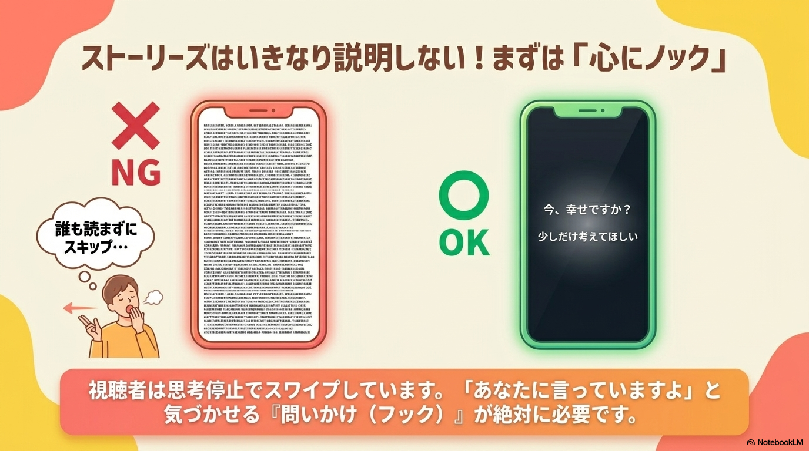
「このままではやばいかもしれない」と現状維持の危うさを提示して気づかせます。
「解決すればこんな明るい未来が待っている」と具体的なベネフィットを見せます。
「何もしないままだと直面する現実」を示し、行動しないことへの不安を覚悟させます。
「だから今、この解決手段（DM送信やLINE登録）をとりましょう」と背中を押します。
この「気づき → 憧れ → 恐れ → 行動」の4ステップを通じて、フォロワーは初めて能動的に動き始めます。ストーリーズの中でこの心理フェーズを順に組み立てていきましょう。
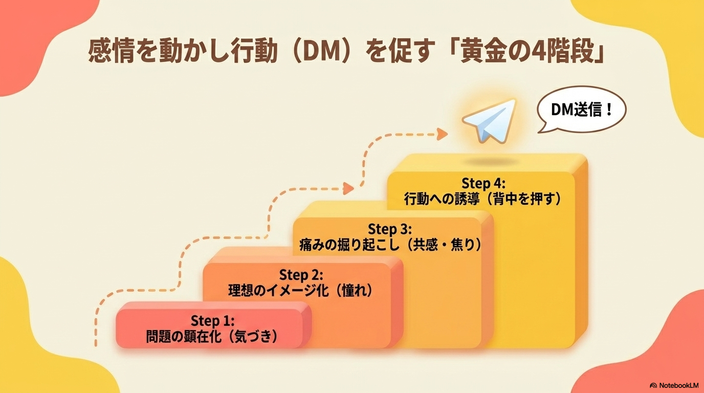
ユーザーの多くは「現状維持バイアス（今のままでいい）」に捉われており、主体的に悩んでいません。ターゲットを「赤ちゃん」だと思うくらいに、何がなぜダメで、どうすれば良いのかを1から100まで丁寧に教育することが不可欠です。
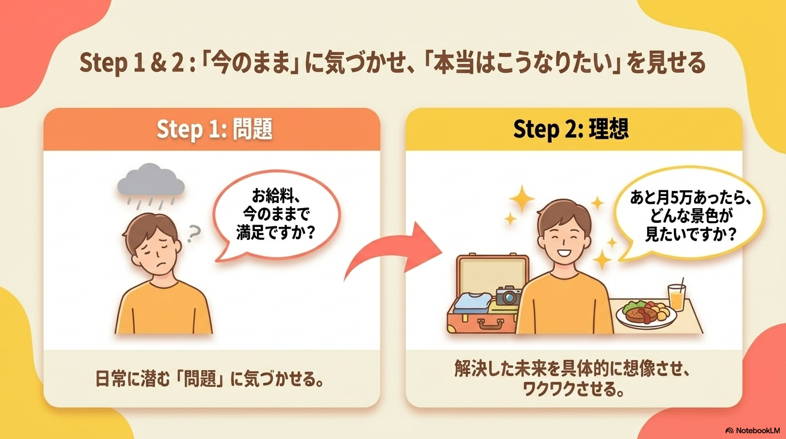
問題意識を育てる4つの要素：
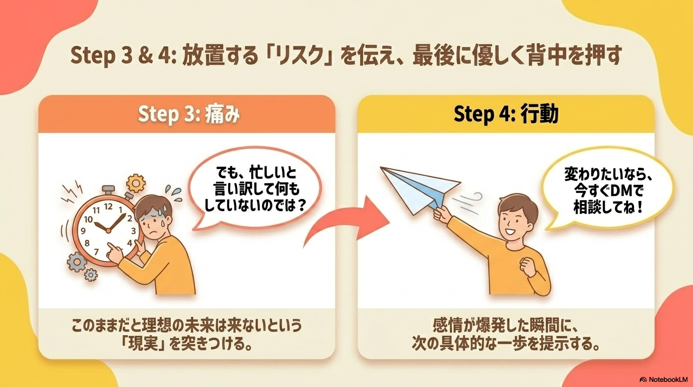
人は理性（数値データ）だけでは動きません。理性の説明に加え、「我慢を続ける人生で本当に満足か？」といった感情面への強力なアプローチと組み合わせることで問題意識は最大化します。
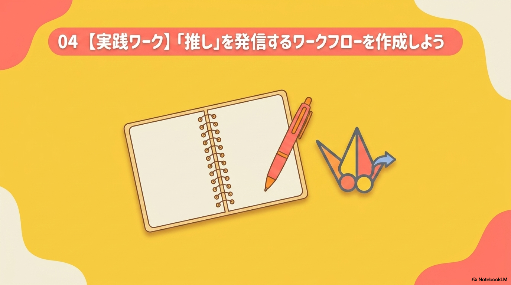
また、「上手に損する（短期的な投資思考）」を教育することも大切です。スクール代などのまとまったお金を「短期的な消費・損失」と捉えるフォロワーに対し、その先にある「長期的なリターン（投資）」の重要性を教えてあげる必要があります。
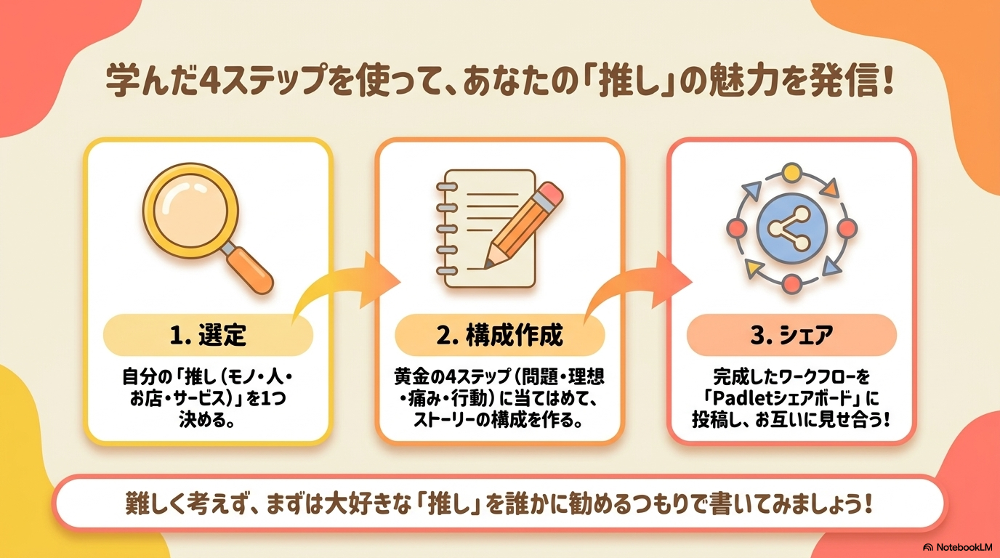
これらすべての問題意識の教育を行って初めて、フォロワーは「変わりたい、話を聞かせてほしい」とあなたの提供する商品に興味を持ち、成約へとつながる最高の顧客へと変化します。
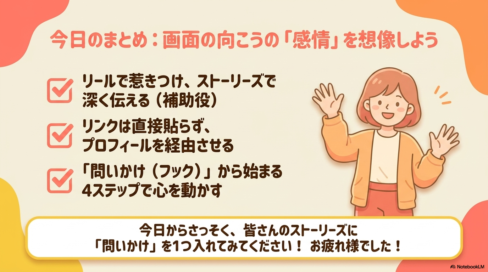
目的： 目標達成に向け、「推し」を発信するワークフローに沿って問いかけフックを企画する